6월 미례국밥 강남삼성타운직영점이 서초대로74길에 오픈합니다. 지켜보는 사람이 많은 매장입니다 — 본사 일본·국내 가맹 사이클이 이 매장의 첫 세 달 성패를 보고 있습니다. 본 기획안은 단순합니다 — 6~8월 안에 마케팅이 직접 실행하는 14개의 액션. 그중 두 개를 "한 방 모멘트"로 두고, 나머지를 누적 자산으로 두는 하이브리드. 인플루언서 디너·시그니처 바이럴 폭발·셰프 게스트·외국인 콘텐츠·푸드 유튜브 브랜디드·자체 매거진·한정 굿즈·게릴라 팝업. 각 액션은 한국 F&B 마케팅에서 검증된 사례에 근거합니다.
월 500만 운영 리테이너는 5월 운영 플랜 연속선으로 별도 운영되며, 본 캠페인 견적과 미포함입니다. v9는 강남 직장인 침투 리서치(인스타 식사 행동 밈·블라인드 자생 시드·총무팀 단체 수요)를 반영해 액션 04(첫 한 방)를 "자체 밈 + 카테고리 정밀 트리거 + 강남 직격" 구조로 재설계하고, 두 번째 한 방(액션 08 메가 셰프)을 8월 초로 당겨 8월 후반을 누적 자산 보강 구간으로 재배치했습니다. 또한 본사 해외 진출(대만 확정·일본 검토) 사전 PR 트랙과 "어머니·국밥" 본질 IP 스토리를 액션 05·06·12에 흡수했습니다.
아래 한 장이 본 기획안의 전부입니다. 14개 액션이 오픈 직전부터 8월 말까지 시점 별로 배치되고, 어떤 액션을 포함하느냐가 예산 옵션을 가릅니다. 액션 04(시그니처 폭발 · 6월 말)·08(메가 셰프 게스트 · 8월 초)이 두 번의 "한 방 모멘트"입니다 — 두 번째 한 방을 8월 초에 둬, 그 임팩트가 8월 후반 누적 자산(콜라보 메뉴·매거진·굿즈·유튜브 후속)의 점화 동력으로 이어지게 했습니다. 나머지는 누적 자산이고, 모두 6~8월 안에 실행 가능합니다.
각 옵션 합계는 캠페인 견적만. 월 500 리테이너 별도. 견적 폭은 인플 등급·셰프 라인업·콘텐츠 규모에 따라 변동 — 정식 견적 협의 시 좁혀짐.
각 액션은 한국 F&B 마케팅에서 검증된 사례에 근거합니다. 어떻게 작동하는지, 누가 보는지, 무엇이 일어나는지 — 그리고 어떤 벤치마크에서 패턴을 가져왔는지까지 함께 보여드립니다.
서울 맛집 인플 30~40명을 두 차례로 나눠 매장에서 저녁을 먹게 한다. 같은 시간, 같은 메뉴를 함께 경험한 30명이 그 다음 주 인스타 피드를 미례국밥으로 채우는 그림.
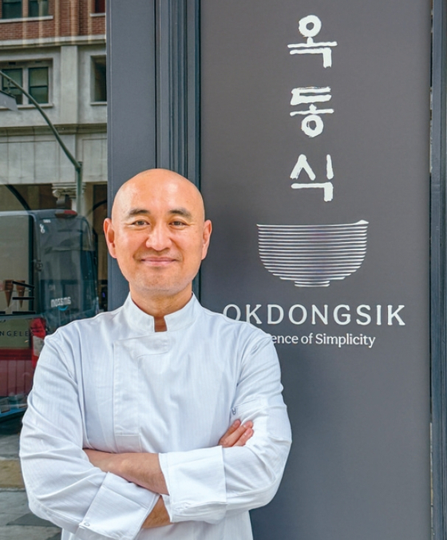
오픈 D-3와 D-1 저녁, 매장이 정식 영업하지 않는 시간에 서울 맛집 인플루언서 30~40명을 두 차례로 나눠 초대합니다. 시그니처 얼큰돼지우동 + 돼지국밥 + 수육 + 한정 사이드를 풀세팅으로 내고, 미디어킷과 테이크아웃 패키지를 함께 손에 쥐어 보냅니다.
이 액션의 본질은 "같은 시간, 같은 메뉴를 30명이 동시에 경험"이라는 시그널입니다. 인플 한 명의 콘텐츠는 흩어지지만, 같은 자리에 30명이 함께 있던 사진이 다음 주 인스타 피드에 한꺼번에 올라오는 그림이 검색 결과 페이지를 미례국밥으로 채웁니다.
인플 보상은 식대·미디어킷·미니 굿즈로 갈음하는 시딩 패턴 — 별도 광고비는 지급하지 않습니다. 한국 외식업 신규 오픈의 표준 패턴이고, 광고비 없이도 자발적 발화가 일어나는 가장 검증된 액션입니다. 핵심은 "초대" 메커니즘입니다 — 톱티어 맛집 인플은 광고비로 움직이지 않습니다. 매장·셰프·메뉴 자체가 가고 싶은 곳이 되어야 초대장이 작동합니다. 그래서 D-3·D-1 디너 자체가 매장의 첫 콘텐츠가 되도록 풀세팅·플레이팅·매장 톤을 미리 깎아 둡니다.
출처 ▸ 유튜브(옥동식 뉴욕) · 미주중앙일보
2020 한남 오픈 시 미식가·인플 디너로 인스타 피드 동시 점령. 이후 분당·역삼·하남까지 같은 패턴 반복. "같은 시간 같은 매장 30명" 시그널이 모든 매장 확장에서 가장 강한 자생 발화를 만듦.
오픈 전날 오후, 매장 셋업 중인 모습을 라이브로 흘리며 카운트다운을 건다. 비용은 거의 0, 자생 발화는 가장 큼.
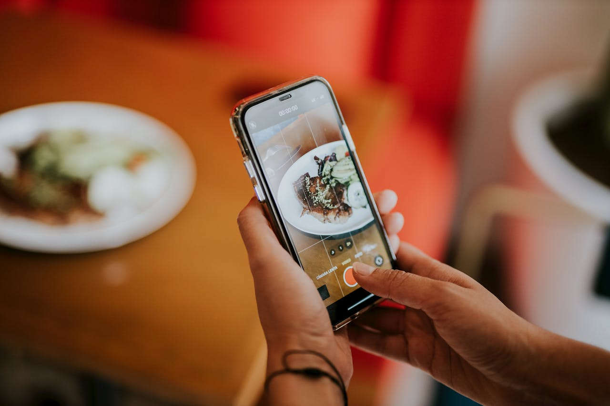
오픈 전날 오후 16~18시, 매장 셋업이 마무리되는 시간을 인스타 라이브로 흘려보냅니다. 가마솥 세팅, 메뉴판 부착, 식기 정리, 점주가 직접 매장을 돌며 설명하는 장면 — 정식 영업 전의 매장이 어떻게 만들어지는지를 손님이 함께 지켜보는 30분~1시간.
이 액션의 핵심은 비용 거의 0, 자생 발화 가장 큼이라는 ROI입니다. 옥동식이 합정·분당·역삼·하남·LA 모든 오픈에서 반복한 패턴 — D-1 라이브를 본 사람이 다음 날 오픈일 줄에 합류합니다. "내일 오전 10시 미례국밥 강남삼성타운직영점 오픈"이라는 한 줄 포스트가 라이브 후에 올라가면, 오픈일 줄 형성이 자연스럽게 시작됩니다.
다른 액션과 무관하게 모든 옵션에 무조건 진행하는 기본 액션입니다.
출처 ▸ 유튜브
옥동식은 2017 합정 오픈 이후 모든 신규 매장에서 D-1 인스타 라이브 + "내일 X시 오픈" 포스트를 반복. 6년간 자생 발화가 가장 강했던 액션. 비용 거의 0인데 효과가 다른 어떤 액션보다 크다는 게 검증된 사례.
오픈 첫 2주, 줄은 의도적으로 생기게 한다. 외벽·바닥·POP가 사진 구도가 되고, 첫 손님 100명이 굿즈를 받아 가서 SNS에 올리는 그림.
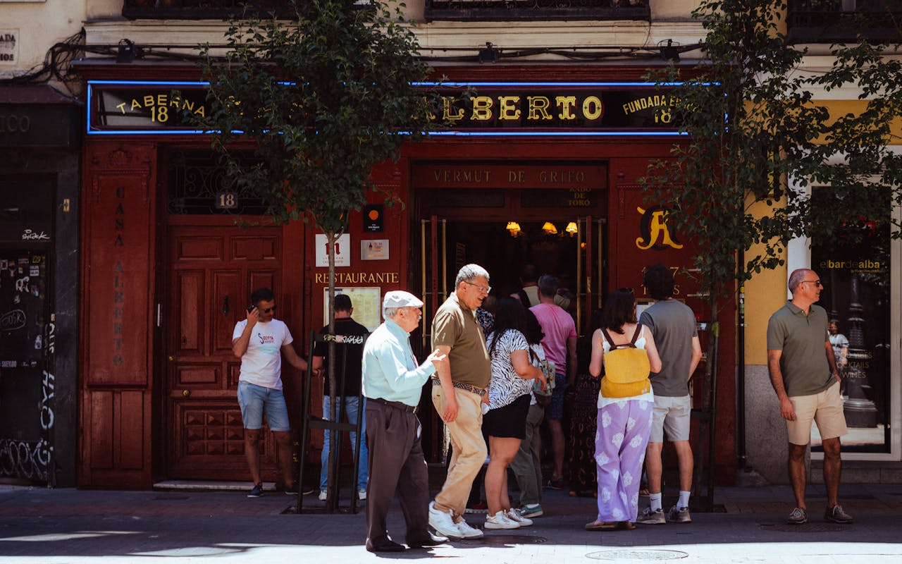
오픈 첫 2주의 줄은 우연이 아니라 의도적 설계입니다. 예약을 차단하고, 테이블 회전을 조정해 11시 30분부터 자연스럽게 줄이 30m 늘어나도록 운영합니다. 줄 자체가 사진이 되려면 매장 외벽·바닥·웨이팅 POP가 셋업되어 있어야 합니다.
외벽은 검정 베이스 + 주황 한 줄 "미례국밥 강남삼성타운직영점 / SINCE 2026". 바닥에 30m 줄 표시·모던 라인, 줄 동선이 사진 구도에 자연스럽게 들어가게. 대기 손님에게는 음료·미니 굿즈를 제공해 줄 자체가 매장 경험의 일부가 되도록.
오픈 D~D+3, 첫 손님 100명에게 부산 모티프 굿즈 패키지(텀블러 or 마그넷)를 배포. 받은 손님 중 20~40%가 SNS에 인증 — 매장 외 자생 콘텐츠 자산이 만들어집니다. 서해오면 4/30 오픈런 선착순 100명 패턴 응용.
"한 방"은 사는 게 아니라 만드는 것. 자체 밈 릴스가 엔진, 돼지국밥·우동 카테고리 정밀 채널이 트리거, 강남·서초 권역 계정이 직격. 6~8월의 첫 "한 방".
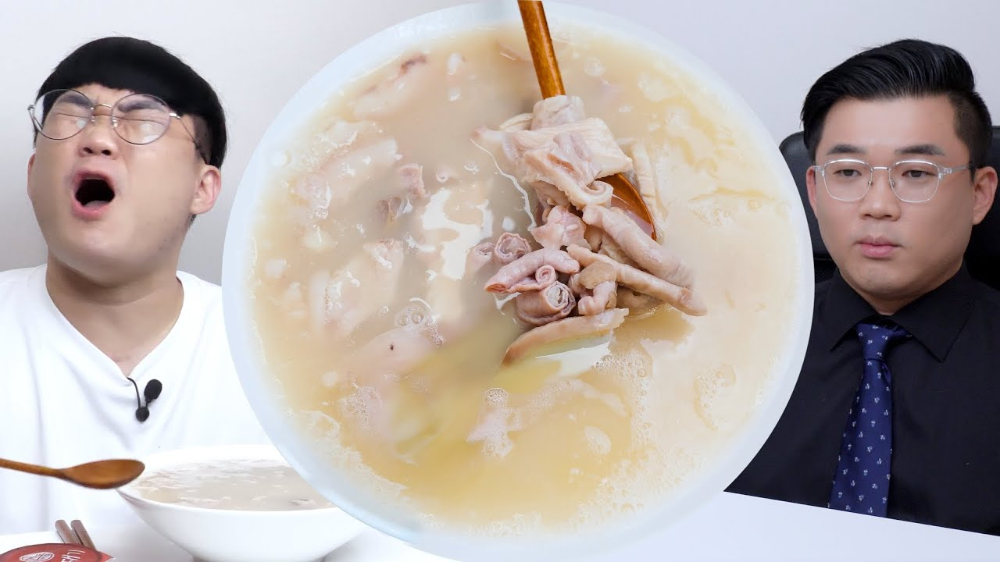
본 기획안의 첫 번째 "한 방 모멘트"입니다. 전제부터 바꿉니다 — 매력적인 메가는 돈으로 사기 어렵습니다. 톱티어 편집형(무협찬 채널)은 협찬을 안 받고, 파는 쪽은 광역·고가입니다. 그래서 "한 방"을 자체 밈(엔진) + 카테고리 정밀 트리거(증폭) + 강남 직격(침투) 세 겹으로 직접 설계합니다.
① 자체 밈 엔진. 한촌설렁탕 "최악의 국밥 메이트" 릴스가 누적 200만 조회를 만든 건 산 메가가 아니라 브랜드 공식 릴스였습니다 — 음식 비주얼이 아니라 "식사 행동 밈"(유형 분류·논쟁)이 핵심. 미례는 "강남 직장인 점심 메이트 4유형" / "돼지우동, 면부터 밥부터?" 같은 9~30초 릴스를 주 2~3편 발행합니다. 저장·공유 유발이 인스타 노출 가중 1순위입니다.
② 카테고리 정밀 트리거. 광고를 받으면서 돼지국밥·우동 카테고리에 정확히 꽂히는 채널로 증폭합니다 — 흑백리뷰(돼지국밥·면 정밀 비교 리뷰)가 얼큰돼지우동 단독 검증 콘텐츠, 유노(우동 도전먹방)가 "얼큰돼지우동 거대버전 도전" 매장 이벤트로 화제성을 만듭니다. 무협찬 편집형(성시경·또간집)은 줄세우기 실적이 쌓인 뒤 "발탁 유도"로만 — 통제 불가 보너스입니다.
③ 강남 직격 + 떼샷. 강남 직장인 맛집 전문 채널(eat9way)·서초 도보권 계정(딜트)으로 권역을 정조준하고, 강남·광역 푸드 계정 10~20개를 오픈 48시간 안에 동시 시딩("떼샷")해 "강남 점심 검색하면 어디 봐도 미례국밥"을 만듭니다. 미례의 "돼지우동" 검색량을 5월 말 500 → 8월 1,000+로 끌어올리는 가장 빠른 길.
출처 ▸ 한촌설렁탕(이지경제) · 흑백리뷰 · 유노
한촌설렁탕은 "식사 행동 밈" 자체 공식 릴스로 누적 200만 조회를 만듦(산 메가 아님). 흑백리뷰는 돼지국밥·면 정밀 비교 리뷰 채널로 CJ 브랜디드 등 협업 이력 보유 — 얼큰돼지우동 단독 검증에 직핏. 유노는 카레우동·고기국수 대용량 도전먹방으로 매장 이벤트형 화제성에 적합. 모두 "자체 밈 + 카테고리 정밀 트리거가 검색량을 바꾸는" 패턴.
일본인 카페·푸드 vlogger를 매장에 부르고 일본어 메뉴판을 같이 깐다. 강남대로 일본계 회사 직장인이 보는 채널.
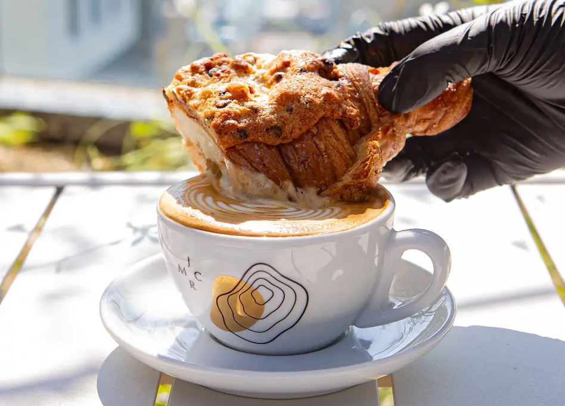
강남삼성타운직영점은 위치상 강남대로 도보권 일본계 회사가 가장 가까운 외국인 손님 풀입니다. 일본인 직장인이 보는 채널은 한국 인플과 완전히 다른 풀 — yutravel·KKday JP·note.com 같은 일본어 매거진 포맷이 표준입니다.
7월 1주차에 한·영·일 3개국어 메뉴판을 발주하고, 7월 중 일본인 카페·푸드 vlogger 2~3명을 매장에 시딩합니다. 콘텐츠 톤은 한국 인플과 결을 달리해서 — 일본 매거진 다큐 톤, 매장 동선·식기·일본어 메뉴판 컷, 외국인 시선의 점심 후기.
이 액션의 두 번째 가치는 본사 해외진출 사전 PR 트랙입니다. 위드런은 2026년 대만 진출이 확정되었고, 일본 진출도 검토 중입니다. 액션 05·06·12(외국인 콘텐츠·사내 워크숍·자체 매거진)는 강남 매장 모객일 뿐 아니라 본사 해외진출 사전 PR 트랙으로 한 묶음입니다 — 일본인 인플 자생 콘텐츠 + 외국인 손님 후기 + 다국어 메뉴판·결제 운영 데이터가 누적되면, 영문·일문·중문으로 정리한 본사 해외진출 미디어 키트로 자산화됩니다. 강남에서 검증된 운영 자료가 대만(확정)·일본(검토) 1호점 진출 시 그대로 작동하는 구조.
강남대로 도보권 일본계 회사 사내 행사에 미례 케이터링·단체 예약을 제안한다. 외국인 임원이 만족하면 회사 단위 인지도가 한 번에 잡힌다.
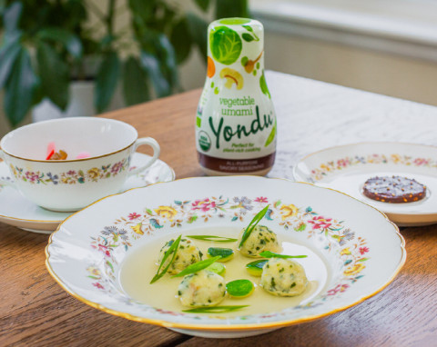
강남대로 도보권에는 일본계 회사가 다수입니다 — 강남역·서초·삼성타운 일대 외국계 직장인이 점심·저녁 외식 동선의 핵심 풀. 이 회사 사내 행사(워크숍·환영회·외국인 임원 점심·문화 체험)에 미례를 케이터링 또는 단체 예약 형태로 가져갑니다.
실행 방식은 단순합니다. 영문·일본어 매장 소개 1장 + 사내 한식 워크숍 패키지(매장 시식 30~50인 또는 케이터링)를 만들어 7~8월 동안 강남대로 도보권 일본계 회사 인사·총무팀에 발송합니다. 한 회사 한 번의 만족 = 회사 단위 인지도 = 자생 발화의 가장 강한 채널.
액션 05(일본인 인플 PPL)·12(자체 매거진 영문판)와 정합해서 운영하면 패키지 신뢰도가 높아집니다.
같은 단체 패키지 메커니즘은 강남 입주 한국 기업에도 적용됩니다 — 다만 무게중심은 삼성타운이 아닙니다. 삼성 금융 3사(생명·화재·증권)는 구내식당이 점심을 흡수하고 사내망도 폐쇄(Knox)라, 구내식당 없는 인근 중소·스타트업·로펌·회계·마케팅 오피스(서초대로74길 일대)가 단체 점심의 1차 타겟입니다. 침투는 세 루트 — ① 식권대장(현대벤디스) 가맹으로 도입 기업 직원 점심 자동 유입, ② 사번 직원 할인 제휴, ③ 총무팀 단체 런치·회식 패키지. 핵심 오퍼는 "웨이팅 없이 12시 전 단체 입장 보장 + 법인 결제"(직장인 점심 페인 직격)입니다. 삼성 권역은 회식·저녁 + 블라인드 자생 후기·오프라인 할인으로만 접근합니다(§4 점심 운영 참조).
출처 ▸ 쿠캭21
샘표는 The Kimchi Club을 운영하며 외국 미디어·PR·인플 약 20명을 매년 프라이빗 클로징 디너로 초대. 외국인 임원에게 한식을 정통 매거진 톤으로 소개하는 검증 패턴. 미례 강남도 일본계 회사 사내 행사로 같은 방식 응용 가능.
중화권 부산 관광 동선에 강남 미례를 박는다. 探店·攻略 포맷이 표준, 사진 위주 짧은 포스트로 자연스럽게 확산.
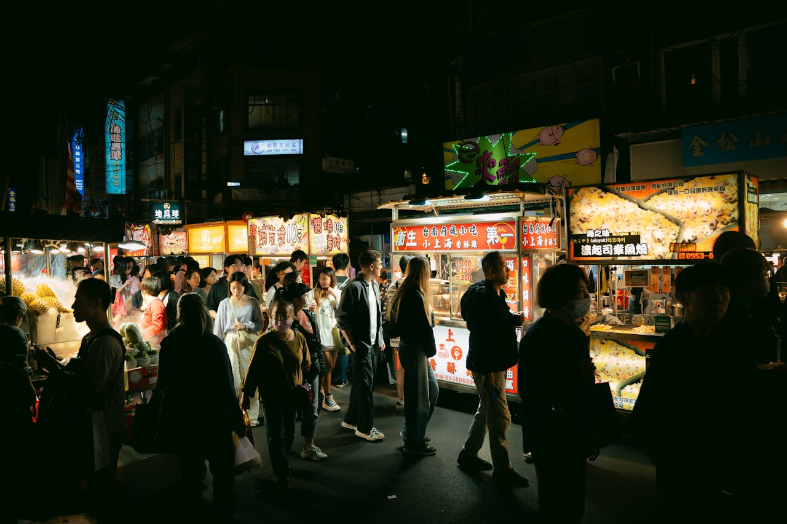
2025년 부산 외국인 1위가 대만(56만, 18.9% 점유)이라는 시장 신호 — 강남에서도 K-푸드 한국 관광 동선에 미례를 박을 수 있는 채널이 샤오홍슈입니다. 중화권 KOC(Key Opinion Consumer)는 메가 인플과 달리 5~7명을 동시에 시딩하는 게 표준 방식.
8월 시작, 샤오홍슈 KOC 5~7명에게 매장 시식·콘텐츠 제작을 의뢰합니다. 포맷은 探店(탐방)·攻略(공략) — 사진 위주 짧은 포스트가 표준입니다. 해시태그 시리즈는 #釜山猪肉汤·#江南拉面·"江南必访" 등 중화권 관광 동선에 직접 들어가는 어휘로.
샤오홍슈 발화 후에는 Bilibili 강남 vlog와 자연 연계됩니다 — 중화권 손님의 한국 관광 후기가 매장에 누적되면, 가을·겨울 중화권 단체 관광 시즌에 자생 유입이 확장됩니다.
흑백요리사 출신·인기 셰프 1명이 미례 매장에서 1주일 한정 게스트가 된다. 한정 메뉴 + 매장 운영 + 미디어 노출 트리플 임팩트 — 8월 초의 두 번째 "한 방"으로, 그 동력이 8월 후반 누적 자산까지 끌고 간다.
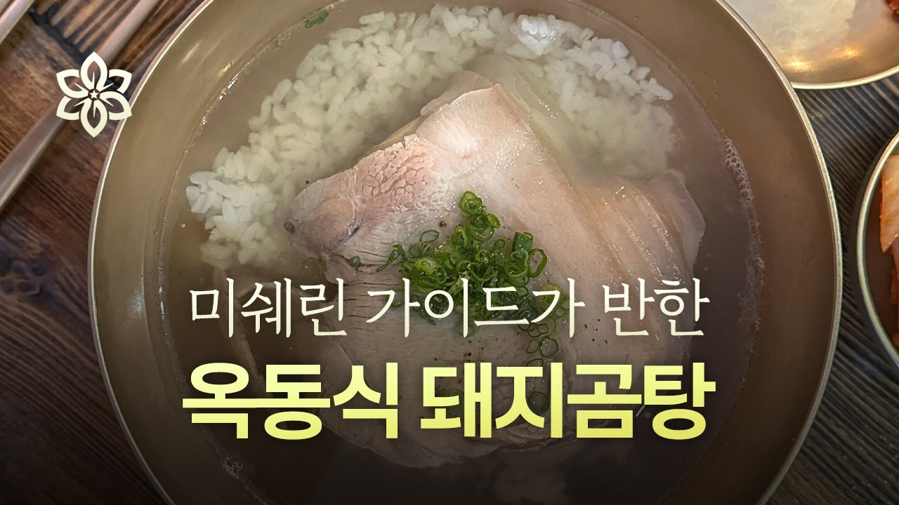
본 기획안의 두 번째 "한 방 모멘트"입니다. 흑백요리사 출연 셰프 레스토랑의 예약율이 최대 5,000% 증가했다는 검증된 패턴 — 미례 강남에도 같은 임팩트를 1주일 한정으로 가져옵니다. 흑백요리사 출신 또는 인기 셰프 1명(안유성·정지선·송훈 라인)이 미례 매장에 게스트 셰프로 들어와 1주일간 한정 메뉴를 만들고 직접 서빙합니다.
이 액션의 임팩트는 단일 액션 중 가장 큽니다. 매장 + 미식 + 미디어 3중 임팩트 — 한 주 동안 매장은 풀세팅 예약, 미식가 SNS가 폭발, 외식·맛집 매체가 자연스럽게 따라옵니다. 옥동식 LA·뉴욕 팝업·샘표 The Kimchi Club 셰프 디너가 같은 패턴.
액션 04와 동일하게 "초대" 메커니즘으로 작동합니다 — 메가 셰프는 단순 콜라보 광고비로 움직이지 않습니다. 미례라는 매장에 와서 한 주를 보내고 싶은 매력이 있어야 하고, 미례의 시그니처 메뉴(돼지우동·국밥)와 셰프 자신의 정체성이 자연스럽게 결합할 수 있는 R&D 협업이 가능해야 합니다. 7월에 R&D 협의를 끝내 셰프와 한정 메뉴 1종을 함께 만들고, 8월 첫 주(예: 8/1~8/7) 매장 운영 + 메이킹 콘텐츠 + 인스타·릴스·매체 노출 통합으로 진행합니다. 두 번째 한 방을 8월 초에 두는 이유는 명확합니다 — 8월 후반(콜라보 메뉴·매거진 #2·굿즈·유튜브 후속)이 게스트 셰프 화제성을 받아 누적 자산으로 굳도록, 임팩트를 8월 끝이 아니라 8월 진입부에 터뜨립니다. 매장 정착이 빠르게 잡혔을 때만 진행하는 Aggressive 옵션 전용 액션.
셰프·미식가 인플과 R&D 협업으로 한정 메뉴 1종을 만들고 인플 채널에 단독 출시. 콜라보 자체가 헤드라인.
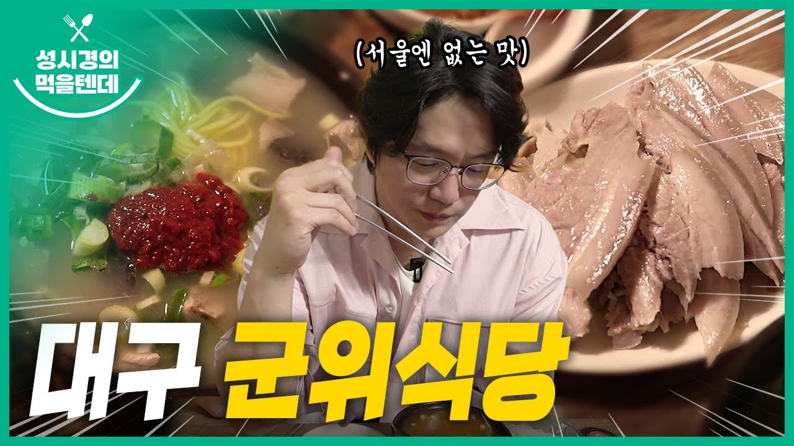
액션 08(게스트 셰프)이 1주 한정 매장 이벤트라면, 액션 09는 한정 메뉴 1종을 R&D부터 함께 만드는 콜라보입니다. 셰프나 미식가 인플 1~2명과 7월 1주차부터 메뉴 R&D를 시작해 8월 중순에 한정 메뉴를 출시. 출시 시점에는 인플 채널 PPL + 자사 SNS 단독 노출로 헤드라인을 만듭니다.
빽다방 × 엄보람 사례가 가장 가깝습니다 — WBC 챔피언 바리스타와 한정 블렌드 메뉴를 함께 만들어 인플 채널 PPL로 출시. 콜라보 자체가 헤드라인이고, 메뉴는 자산이 됩니다. 미례에도 외식 평론가·미식가 인플·"먹을텐데" 라인의 셰프 1~2명과 같은 결의 콜라보 가능.
이 액션의 핵심은 "안목 따라잡기"가 아니라 미례 단독 헤드라인이라는 점입니다 — 안목은 강남구 역삼동(언주로 520), 미례는 서초구 서초동(서초대로74길 23). 강남대로 양쪽 권역 분리 덕분에 콜라보 출시 시 "강남 1위 안목 다음 부산 매장"이 아니라 "서초·삼성타운 권역의 부산 미례 한정 메뉴"라는 독립 헤드라인이 가능합니다.
출처 ▸ 성시경 먹을텐데
빽다방 × 엄보람은 시그니처 블렌드 콜라보 + PPL로 화제성 + 메뉴 자산 동시 확보. 현대옥은 "성시경의 먹을텐데" 노출로 강남 논현 매장의 검색 시장이 단숨에 잡힘. 두 패턴 모두 셰프·미식가의 단독 발화 = 카테고리 헤드라인이라는 검증된 외식 사례.
부산 양조장·디저트 브랜드와 미례 매장 한정 페어링 또는 회식 코스. "부산에서 온 술 × 부산에서 온 국밥".
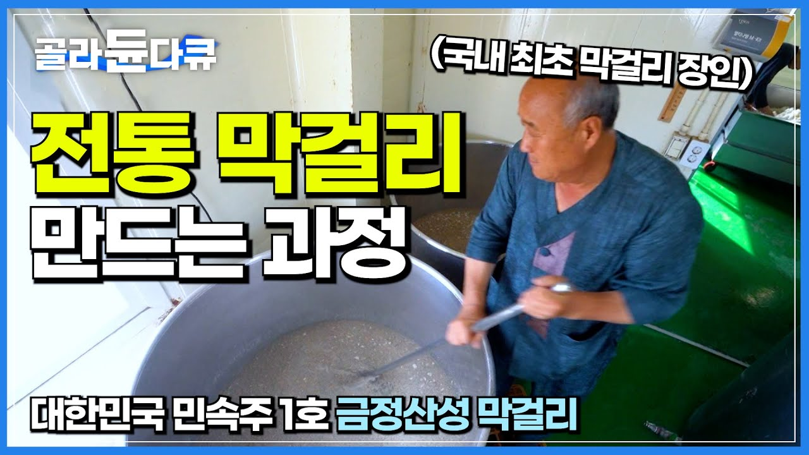
액션 09(셰프 콜라보)가 인플 중심이라면, 액션 10은 F&B 식음료 브랜드와의 콜라보입니다. 부산 양조장(거북소주·금정산성 막걸리)이나 부산 빵·디저트(옵스 등)와 미례 매장의 한정 페어링 또는 회식 코스를 함께 만듭니다.
이 액션은 두 가지를 동시에 노립니다 — (1) 두 브랜드 상호 콘텐츠 노출(양조장의 인스타·자체 채널에 미례 노출 + 미례 채널에 양조장 노출), (2) 회식 단가 차별화(부산 양조장 술 + 부산 국밥 회식 코스라는 강남 일반 한식에 없는 결). 액션 07(법조타운 회식 코스)와 시너지가 큽니다.
샘표 The Kimchi Club 셰프 디너가 같은 패턴 — 식음료 브랜드 + 셰프 + 한식 매장의 협업으로 미디어·PR·미식가를 동시에 잡습니다. 미례 강남이 부산 브랜드와 함께 가는 콜라보는 "부산 정체성을 유지하면서 강남에서 잘 팔리는" 차별화 카드.
출처 ▸ 샘표 · heyPOP 부산 F&B
샘표 The Kimchi Club은 식음료 브랜드 + 셰프 + 한식 매장 협업으로 매년 외국 미디어·미식가 20명 디너를 운영. 부산 거북소주·금정산성 막걸리는 부산 정통성 + 모던 브랜딩의 양조장으로 한식 매장 콜라보가 자연스럽게 어울리는 라인.
푸드 유튜브 채널에 시음·맛 분석·매장 풀편 브랜디드 영상을 의뢰한다. 신뢰·전문성 자산 누적.
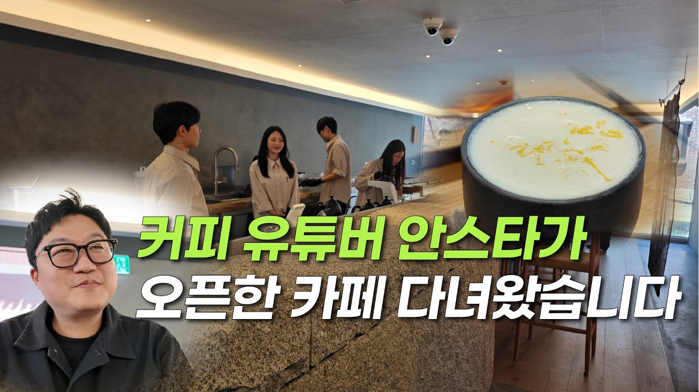
인플 디너(01)·메가 인플 폭발(04)이 단발 화제성이라면, 푸드 유튜브 브랜디드는 신뢰·전문성 자산 누적의 다른 결입니다. 신메뉴 개발 없이 정규 메뉴(돼지국밥·얼큰돼지우동·수육) 안에서 깊이 있는 시음·맛 분석·매장 풀편 영상을 의뢰합니다.
7월 중순 채널 컨택·기획 → 8월 전반 분산 게재. 푸드 유튜버 후보는 맛도리·안스타·외식 채널 등 구독자 5만~50만 미드~매크로 라인. 채널마다 브랜디드 영상 1편의 단가 폭이 큽니다 — 구독자 5~10만 미드는 300~800만, 구독자 20~50만 매크로는 500~1,500만.
유튜브 영상은 게재 후 쇼츠로 미러링하면 4채널(유튜브·쇼츠·인스타 릴스·틱톡) 동시 확산이 가능합니다. 흑백요리사 출연 셰프 콜라보(09)와 결합하면 푸드 유튜버 영상이 셰프 메뉴 시음으로 자연스럽게 연결됩니다.
두 콘텐츠 축 — 시즌 특집 + "어머니·국밥" 본질 IP 스토리. PDF·매장 인쇄본·인스타 캐러셀 3 포맷. 시즌 어휘 자산이자 본사 해외진출 미디어 키트.
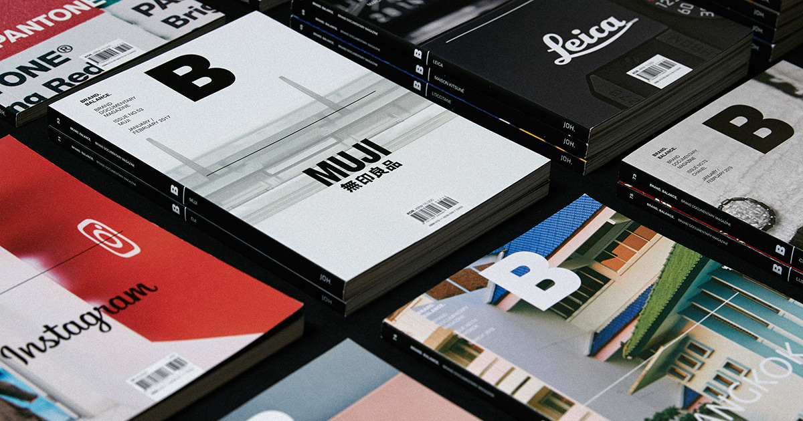
댄싱컵 딥라떼 매거진 톤 응용. 자체 매거진 "강남에서 부산을 먹는 법" 시즌 1 두 호를 7~8월 안에 발행합니다. PDF + 매장 인쇄본 50~100부 + 인스타 캐러셀 3 포맷.
매거진은 두 콘텐츠 축으로 굴립니다. ① 시즌 특집 — #1호 "전포에서 강남으로" (7월 셋째 주): 매장 오픈 1개월 차의 미례 이야기, 부산 본점 새벽 가마솥, 강남 점심 회전, 미례를 처음 만난 강남 직장인 인터뷰. #2호 "회식 코스 특집" (8월 둘째 주): 법조타운 회식 코스, 부산 양조장 콜라보 메뉴, 외식 평론가 시음. 두 호 모두 에디터 3인칭 다큐 톤.
② 본질 IP 스토리 — "어머니·국밥". 두 호에 공통으로 흐르는 척추 시리즈입니다. 미례라는 이름과 창업 스토리, 부산 본점 가마솥과 재료 산지, 새벽에 국밥을 끓이는 손, 국밥 한 그릇의 위로를 받은 손님 사연 — 서민 식문화의 본질을 콘텐츠 IP로 쌓습니다. 시그니처 폭발(04)·게스트 셰프(08)가 화제성이라면, 본질 IP는 브랜드가 "왜 미례인가"를 설명하는 자산입니다. 이 IP 라인은 굿즈(13)·전시·해외 진출 PR로 재활용되는 미례의 장기 브랜드 코어가 됩니다.
매장 인쇄본은 카운터·테이블에 자유 배포 — 들고 가는 자체가 콘텐츠입니다. 외국인 손님(액션 05·06)이 받아 가서 일본·중화권에 가져가는 PR 자료가 됩니다. 영문·일문·중문으로 번역하면 그대로 본사 해외진출 미디어 키트 — 대만(2026 확정)·일본(검토) 1호점 진출 시 강남에서 검증된 톤·어휘·본질 IP가 해외 매장 브랜드 톤으로 이어집니다(액션 05·06과 한 묶음 트랙). PDF는 자사 인스타·블로그·이메일 뉴스레터에서 다운로드 링크로.
출처 ▸ 매거진B
매거진B는 브랜드 자체 매거진의 글로벌 표준. 댄싱컵도 딥라떼 시즌 매거진을 자체 발행해 매장 굿즈 + 외부 PR 자료 동시 작동. 미례 강남도 같은 결로 "강남에서 부산을 먹는 법" 시즌 매거진 운영 가능.
시즌별 굿즈 3종 — 6월 오픈·7월 시그니처·8월 콜라보. 들고 다니는 자체가 콘텐츠.
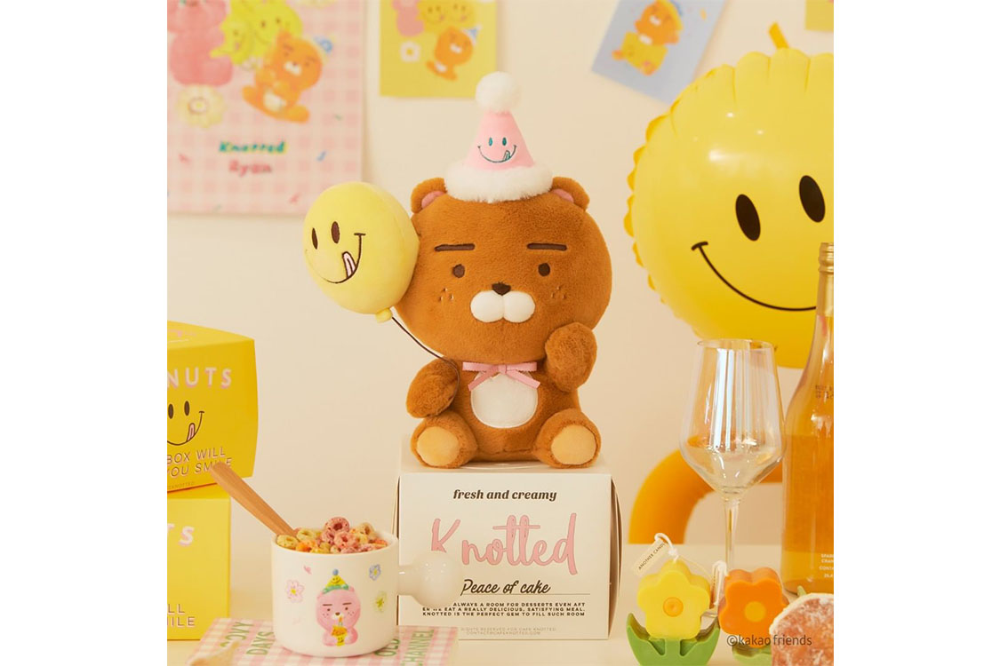
오픈 첫 100명 굿즈(액션 03)에서 시작해 7월·8월 시즌별로 추가 굿즈를 시리즈로 운영합니다 — 6월 오픈 굿즈(텀블러 또는 마그넷), 7월 시그니처 굿즈(돼지우동 키링·스티커), 8월 콜라보 굿즈(에코백·자기 미니어처).
이 액션의 핵심은 "굿즈를 받기 위해 방문하는" 자생 SNS 자산입니다. 백소정 굿즈 이벤트, 서해오면 4/30 오픈런 100명 일러스트 굿즈, 노티드 × 카카오프렌즈 콜라보 굿즈가 모두 같은 패턴 — 굿즈가 매장 방문의 이유가 되고, 받은 손님이 SNS에 인증하는 흐름.
각 시즌 굿즈는 100~300개 한정으로 매장에서만 배포(온라인 판매 X). 손님이 굿즈를 받기 위해 다음 시즌에도 매장에 다시 오는 단골 전환 효과까지 동시에. 디자인은 부산 일러스트레이터·작가와 1년 라이선스로 묶으면 자체 매거진(12)과 톤이 일관됨.
출처 ▸ 노티드 × 라이언
백소정(소바·돈카츠 1위)은 굿즈 이벤트를 정기적으로 운영하며 자생 SNS를 확보. 서해오면은 4/30 오픈일 선착순 100명 일러스트 굿즈로 인스타 인증 폭발. 노티드 × 카카오프렌즈는 한정 캐릭터 굿즈로 단골 + MZ 콜렉터 동시 유입. 미례도 시즌별 3종 시리즈로 같은 결.
성수·이태원·홍대·잠실 중 한 곳, 1일 게릴라 팝업. "미례가 강남 외로도 나왔다"는 자생 발화.
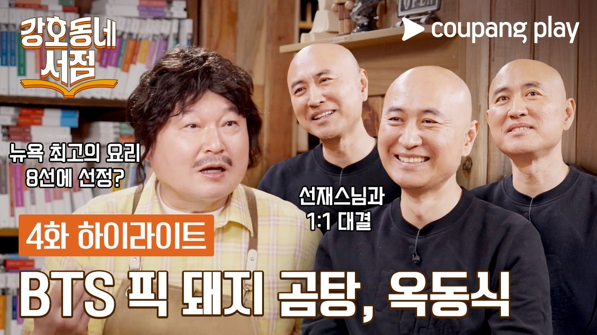
옥동식이 합정·한남·역삼·하남까지 가더니 LA·뉴욕·호놀룰루·도쿄까지 팝업을 확장한 패턴 — 한 매장이 자기 권역에 갇히지 않고 외부 권역으로 한 번씩 나와 자생 발화를 만드는 검증된 동선. 미례 강남은 6~8월 안에 강남 외 핫스팟 한 곳에서 1일 게릴라 팝업을 진행합니다.
권역 후보는 성수·이태원·홍대·잠실. 1일 임대 공간(20~50평) + 임시 매장 셋업 + 한정 메뉴 운영. 8월 중 1일(예: 8/16 토)에 집중해서 — 매장 외 노출 = 자생 SNS + 외부 매체 + 강남 매장 유입 동선 확보.
액션 08(게스트 셰프)·09(콜라보 메뉴)·10(F&B 콜라보)와 시너지 가능 — 게릴라 팝업에서 셰프 콜라보 메뉴를 선공개하거나, 부산 양조장 콜라보를 함께 운영하면 단일 팝업이 다중 콘텐츠 자산이 됩니다. Aggressive 옵션 전용 액션.
출처 ▸ TIN뉴스 성수 팝업
옥동식은 합정에서 시작해 한남·역삼·하남까지 가더니 미서부 LA·뉴욕·호놀룰루·도쿄까지 팝업으로 확장. 인플 협업 팝업스토어(유병재·레오제이 등)도 1주~1개월 한정 운영으로 자생 화제 확보 검증. 미례 강남도 1일 게릴라로 같은 결의 단발 확장 가능.
본 예산은 캠페인 액션만 포함. 월 500 운영 리테이너는 별도 운영 라인입니다. 어떤 액션을 포함하느냐가 세 옵션을 가릅니다.
| 액션 | Light | Standard | Aggressive | 견적 |
|---|---|---|---|---|
| 01 · 맛집 인플 디너 파티 | ● | ● | ● | 500~800만 |
| 02 · D-1 인스타 라이브 | ● | ● | ● | 0~20만 |
| 03 · 줄 셋업 + 첫 100명 굿즈 | ● | ● | ● | 180~400만 |
| 04 · 메가 인플 폭발 + 시식회 | ● | ● | ● | 1,800~3,500만 |
| 05 · 일본인 인플 PPL | — | ● | ● | 400~1,000만 |
| 06 · 일본계 사내 워크숍 | — | ● | ● | 80~200만 |
| 07 · 샤오홍슈 KOC | — | ● | ● | 400~800만 |
| 08 · 메가 셰프 게스트 디너 1주 | — | — | ● | 3,000~5,000만 |
| 09 · 셰프 콜라보 한정 메뉴 | — | — | ● | 1,500~3,000만 |
| 10 · F&B 식음료 콜라보 | — | ● | ● | 300~800만 |
| 11 · 푸드 유튜브 브랜디드 | ● | ● | ● | 1,500~4,000만 |
| 12 · 자체 매거진 | ● | ● | ● | 300~700만 |
| 13 · 한정 굿즈 시리즈 3종 | ● | ● | ● | 200~500만 |
| 14 · 강남 외 게릴라 팝업 1회 | — | — | ● | 500~1,500만 |
| 옵션 합계 (캠페인만, 리테이너 별도) | 4,480~9,920만 | 5,660~12,720만 | 10,660~22,220만 |
본 기획안의 두 "한 방 모멘트" — 액션 04(메가 인플 시그니처 폭발)는 Standard부터, 액션 08(메가 셰프 게스트 디너)은 Aggressive 진입에 들어갑니다. Light는 외국인 라인이 빠져 본사 해외 진출 빌드업이 함께 쌓이지 않습니다. Aggressive는 두 번째 한 방까지 가져가는 강한 임팩트지만 견적 폭(10,660~22,220만)이 큽니다 — 정식 견적 협의 시 좁혀져야 함. Standard는 첫 한 방 + 외국인 + F&B 콜라보 + 자산 축적이 6~8월 매장 정착과 마케팅 사이클이 자연스럽게 도는 무게입니다. 매장 정착 속도에 따라 8월 중 Standard → Aggressive로 옵션을 끌어올리는 게이트 운영도 가능합니다.
아래는 마케팅이 직접 실행하는 액션이 아니라, 매장 매출 코어를 만드는 매장 운영 정책 제안입니다. 매장 측 결정 사항이고, 채택되면 마케팅이 콘텐츠로 흡수합니다.
저녁 회식 코스·단체석 운영 무드 레퍼런스 — 한식 다이닝 공간 (Wikimedia Commons, 무드 예시 / 미례 매장 셋업 후 자체 자료로 교체). 출처 ▸ Wikimedia
옹기 + 강남 한정 미니멀 흰 자기 1종 · 한·영·일 메뉴판(사진 없이 타이포만) · 흰 셔츠 + 검정 앞치마 + "MIRYE GANGNAM" 명찰 · 30m 줄 동선 인스타블 셋업. 제작 리드타임 2~3주, 6월 1주차 전 발주.
11:30~13:30 점심 회전 룰 — 1인 30분 안 회전 + 5~10인 단체 12시 전 입장 보장(웨이팅 회피 = 직장인 점심 최대 페인) + 법인 카드·세금계산서. 식권대장(현대벤디스) 가맹으로 도입 기업 직원 자동 유입, 사번 직원 할인 제휴 + 총무팀 단체 런치 패키지. 1차 타겟 = 구내식당 없는 74길 소형 오피스(스타트업·로펌·회계). 마케팅 흡수: "강남 점심 인증" 시리즈 + 직원 자발 후기(블라인드 자생, 대가성 X).
6~8인 룸 + "부산 정통 회식 코스" (돼지국밥·수육·전·반주) + 캐치테이블 회식 옵션. 마케팅 흡수: 법조 인플 시딩 + 자체 매거진 회식 특집(액션 12).
6/7/8월 한 번씩 방문 시 얼큰돼지우동 무료. 종이 패스 디자인이 모던 톤이라 들고 다니는 자체가 콘텐츠. 인스타 "다음에 가야지" 저장 행동을 재방문 동기로 연결. 매장 원가·운영 협의 필요.
본점 메뉴 + 강남 한정 변형 1종 (수육 모던 플레이팅 또는 미니 돼지국밥 점심 1인 셋업). 7월 출시 검토. 주방·운영 컨펌.
월 활동비 10만원 × 7명 × 3개월 = 210만. 카페·편의점 검증 패턴(이디야 메이튜·올리브영 O-log) 응용. 매장발 자생 콘텐츠 풀.
위치는 서초대로74길 23 확정. 남은 변수 = 도면·오픈 정확일. 6월 1주차 전.
Light / Standard / Aggressive 중 하나. Standard 권장. 옵션 선택 후 액션별 정식 견적 협의.
식기·메뉴판·유니폼·외벽 POP·줄서기·사이드 플레이팅. 제작 리드타임 2~3주.
점심 1인·단체 라인, 법조타운 회식 코스, 스탬프 패스, 강남 한정 메뉴 — 매장 측 결정.
스마트플레이스 정식 명칭 = 미례국밥 강남삼성타운직영점. 권한 공유 5월 말.
액션 04 메가 인플(50만+ 푸드 채널), 액션 08 게스트 셰프(흑백요리사 출신·인기 셰프) 후보 정탐 6월 1주차부터.
본사 2026 대만 확정·일본 검토 중. 액션 05·06·12를 한 묶음 사전 PR 트랙으로 운영 — 외국인 콘텐츠·운영 데이터·자체 매거진을 영문·일문·중문 미디어 키트로 자산화. 본사 방향·일정 + 키트 번역 범위 컨펌 필요.
액션 12 "어머니·국밥" 본질 IP 시리즈를 위해 미례 창업 스토리·작명 유래·부산 본점 가마솥·재료 산지·초기 단골 사연 등 1차 자료 협조 필요. 6~7월 매거진 #1호 전 확보.
액션 08·09의 메가 셰프·미식가 라인업과 별개로, 한식 셰프 커뮤니티(난로회 · 옥동식 · 핸드 호스피탈리티 · 미슐랭 셰프 라인) 정기 노출은 본사 자체 브랜드 띄우기와 해외 진출 빌드업의 장기 트랙입니다. 6~8월 본 캠페인 외 별도 트랙으로 협의 가능.
14개 액션 모두 외부 레퍼런스 이미지가 임시 임베드되어 있습니다. 매장 오픈 후 자체 자료(인플 디너·줄 동선·매장 정물 등) 확보되면 정확한 미례 이미지로 교체 권장.
체험단·인플·시딩 콘텐츠는 "광고/협찬"을 제목·본문 상단에 표기합니다(2024.12 공정위 추천·보증 심사지침). 직장인 채널(블라인드·사내)은 직원 자발 후기만 활용 — 자작·대가성 후기는 금지(표시광고법 §3). 직원 할인·식권대장 가맹은 광고가 아니라 즉시 운영 가능.
두 번의 한 방 — 액션 04(시그니처 폭발 · 6월 말)와 액션 08(메가 셰프 게스트 · 8월 초). 두 번째 한 방을 8월 초에 둬 8월 후반을 누적 자산이 굳는 구간으로 씁니다. 그 사이와 뒤를 12개 액션이 누적합니다 — 인플 디너 · D-1 라이브 · 줄세우기 + 굿즈 · 일본 인플 · 사내 워크숍 · 샤오홍슈 KOC · 셰프 콜라보 한정 메뉴 · F&B 식음료 콜라보 · 푸드 유튜브 브랜디드 · 자체 매거진 · 한정 굿즈 시리즈 · 강남 외 게릴라 팝업. 모두 6~8월 안에 마케팅이 직접 실행하는 일. 한국 F&B 마케팅에서 검증된 사례에 근거한 14개 액션, 시점·인원·견적·기대 결과까지 손에 잡힙니다. 매주 월요일 오전 9시 위클리 메일링 + 대시보드 업데이트로 진행 상황을 함께 트래킹합니다.
{kind=link}